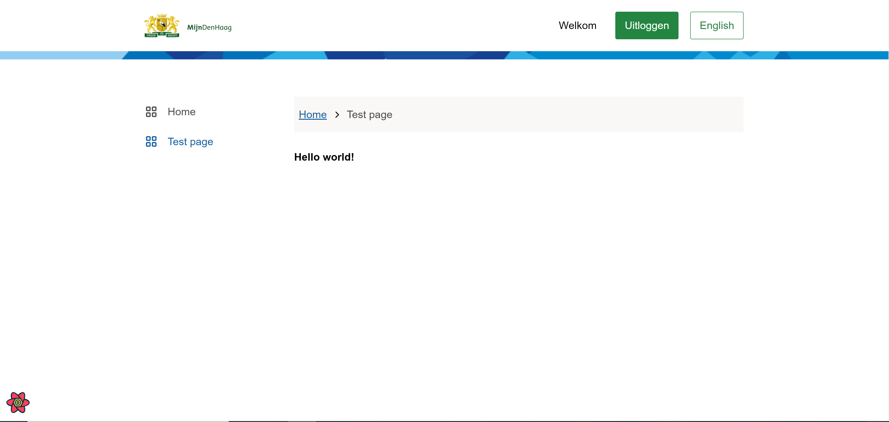
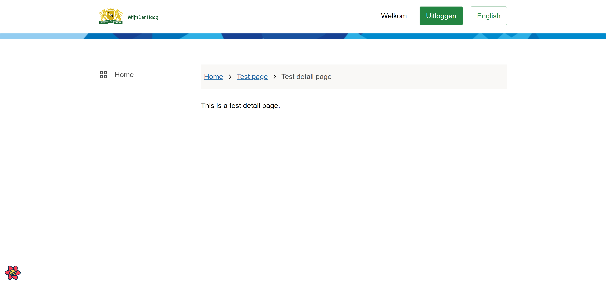

Development of the Skeleton Application
This page consists of the following parts:
- Adding an overview page
- Adding a detail page
These steps require you to:
- Spin up the front-end of the application.
- Spin up the backend
Adding an overview page
An overview page is meant for each unique meaning of a term (or topic). Or they provide free navigation guides for a topic and include a headline, a short definition.
You can add a new page with the following steps:
-
Create a new
.tsxfile for your page atpwa/src/pages/{folder-name}.tsx -
-Optional:- Add a template to the page (this is not necessary but makes the code base clean and organized)
- Create a new folder under
pwa/src/templates/{folder-name} - Create a
.tsxfilepwa/src/templates/{folder-name}/{File-name}.tsx - Create a .module.css file
cd pwa/src/templates/{folder-name}/{File-name}.module.css(if nadditional styling is needed on page level) - When adding content to the page , select a template based on content.
- See this doc about the different template types
NOTE The breadcrumbs are automatically generated, but this leads to user-unfriendly names in most cases. You can change the names in the
gatsby-config.jsfile.NOTE When creating a folder, Gatsby expects an
index.tsxorindex.tsfile to render the page
As an example we will create a folder and file:
# create a folder
mkdir pwa/src/templates/PetStore
# creating a .tsx file in the Petstore folder
cd pwa/src/templates/petStore/
touch PetStore.tsx
# creating an optional .module.css file
touch PetStore.module.css
Now with the overview page and template done, let's add the template as an import to the page.
The code of the petStore page file looks like this after the imports and component elements:
// pwa/src/pages/petStore.tsx
import * as React from "react";
import { DashboardTemplate } from "../templates/dashboard/DashboardTemplate"; //imports
import { TestTemplate } from "../templates/testFolder/TestTemplate"; // imports
const TestPage: React.FC = () => {
return (
<DashboardTemplate>
<TestTemplate />
</DashboardTemplate>
)
}; // Rendering the components
export default TestPage;
The follow-up is adding a sideNav item for the page to navigate to. You can add this in the DashboardTemplate. Inside the template is a variable called menuItems. Inside this variable, you can add a new item.
Once added, your code should look similar to this example:
// pwa/src/templates/dashboard/DashboardTemplate.tsx
const menuItems: MenuItem[] = [
{ label: t("Home"), href: "/", current: pathname === "/", icon: <GridIcon /> },
{ label: t("Test page"), href: "/testFolder", current: pathname === "/testFolder", icon: <GridIcon /> }
];
Navigate to localhost:8000 and click on the sideNav item 'Test page'
to see the following example:

Adding a detail page
A detail page is meant for a part of a unique topic.
Adding a detail page is easily done with the following steps:
cd pwa/src/pages
mkdir {folder-name}
mv pwa/src/pages/petStore.tsx {folder-name}
touch [`index.ts`](glossary.md#ts-file)
For everything to work, some importing and exporting needs to be done. In this file we are going to import and export the overview page we created cd pwa/src/pages/petStore.tsx
- @TODO explanation index file import/export
- The import/ export file code really is nothing more than:
// pwa/src/pages/test/index.ts
import TestPage from "./test";
export default TestPage;
Restart the development server and go to localhost:8000/petStore
Reinstall the package-json with the following command and start the server again with these commands in the terminal:
$ ctrl + C
npm install
npm start
You will see the same result as above.
Now it's time to add the detail page
In the terminal:
cd pwa/src/pages/{folder-name}/[fileId]
touch {file-name}.tsx
// In `index.ts` we are going to import and export the detail page we created `cd pwa/src/pages/{folder-name}/[fileId]/{file-name}.tsx`
touch index.ts
mkdir pwa/src/templates/{folder-name}
cd pwa/src/templates/{folder-name}
touch {file-name}.tsx
// Import the template file `cd pwa/src/templates/{folder-name}/{file-name}.tsx` in the detail page `cd pwa/src/pages/{folder-name}/[fileId]/{file-name}.tsx` we added
Restart the development server, like in the previous section and go to localhost:8000/petStore/{someId}
NOTES:
The parentheses around the
fileIdmakes Gatsby view this as a variable
{someId}can be anything

To change the breadcrumbs, go to the gatsby-config.js file in /pwa/
There's a gatsby-plugin-breadcrumb block in the file. Under the options key, add an array crumbLabelUpdates.
You can add an object with pathName and crumbLabel.
For the pathName, we can add the folder name as it is. crumbLabel will be the outcome.
Here we will edit the breadcrumbs of the two pages we just created.
// cd pwa/gatsby-config.js
crumbLabelUpdates: [
{
pathname: "/petStore",
crumbLabel: "Pet store",
},
{
pathname: "/petStore/[petStoreId]",
crumbLabel: "Pet store detail page",
},
]
Restart the development server. The breadcrumbs should look like this.

Adding components to your page
Now that you've added the two pages, we can add components to those pages. click here to see the guide.